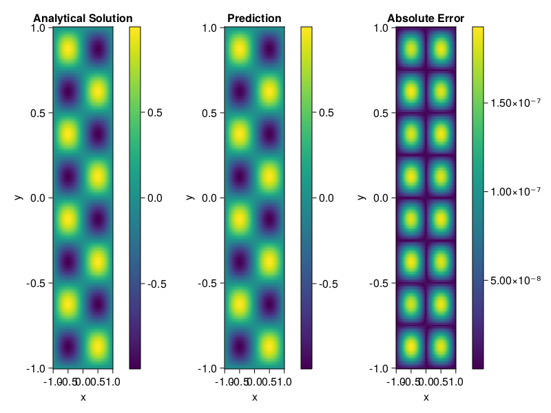

Helmholtz equation
Let us consider the Helmholtz equation in two space dimensions
\[\begin{aligned} &\Delta u(x, y)+k^{2} u(x, y)=q(x, y), \quad(x, y) \in \Omega:=(-1,1)^2 \\ &u(x, y)=0, \quad(x, y) \in \partial \Omega \end{aligned}\]
where
\[q(x, y)=-\left(a_{1} \pi\right)^{2} \sin \left(a_{1} \pi x\right) \sin \left(a_{2} \pi y\right)-\left(a_{2} \pi\right)^{2} \sin \left(a_{1} \pi x\right) \sin \left(a_{2} \pi y\right)+k^{2} \sin \left(a_{1} \pi x\right) \sin \left(a_{2} \pi y\right).\]
The excat solution is $u(x,y)=\sin{a_1\pi x}\sin{a_2\pi y}$. We chose $k=1, a_1 = 1$ and $a_2 = 4$.
using ModelingToolkit, IntervalSets, Sophon, Lux
using Optimization, OptimizationOptimJL
@parameters x,y
@variables u(..)
Dxx = Differential(x)^2
Dyy = Differential(y)^2
a1 = 1
a2 = 4
k = 1
q(x,y) = -(a1*π)^2 * sin(a1*π*x) * sin(a2*π*y) - (a2*π)^2 * sin(a1*π*x) * sin(a2*π*y) + k^2 * sin(a1*π*x) * sin(a2*π*y)
eq = Dxx(u(x,y)) + Dyy(u(x,y)) + k^2 * u(x,y) ~ q(x,y)
domains = [x ∈ Interval(-1,1), y ∈ Interval(-1,1)]
bcs = [u(-1,y) ~ 0, u(1,y) ~ 0, u(x, -1) ~ 0, u(x, 1) ~ 0]
@named helmholtz = PDESystem(eq, bcs, domains, [x,y], [u(x,y)])\[ \begin{align} \frac{\mathrm{d}}{\mathrm{d}y} \frac{\mathrm{d}}{\mathrm{d}y} u\left( x, y \right) + \frac{\mathrm{d}}{\mathrm{d}x} \frac{\mathrm{d}}{\mathrm{d}x} u\left( x, y \right) + u\left( x, y \right) =& - 166.78 \sin\left( 3.1416 x \right) \sin\left( 12.566 y \right) \end{align} \]
Note that the boundary conditions are compatible with periocity, which allows us to apply BACON.
chain = BACON(2, 1, 5, 2; hidden_dims = 32, num_layers=5)
pinn = PINN(chain) # call `gpu` on it if you want to use gpu
sampler = QuasiRandomSampler(300, 100)
strategy = NonAdaptiveTraining()
prob = Sophon.discretize(helmholtz, pinn, sampler, strategy)
@time res = Optimization.solve(prob, BFGS(); maxiters=1000)u: ComponentVector{Float64}(filters = (filter_1 = (bias = [0.7946754648420529; -0.41566624968119326; … ; -0.08867324784220755; -0.30044679102168625;;]), filter_2 = (bias = [0.0008477312858190364; 0.9850985498539832; … ; -0.43042758650922447; 0.48374971326206945;;]), filter_3 = (bias = [0.47226810501469413; 0.5554902346913753; … ; -0.7124834562772084; -0.33645792466026414;;]), filter_4 = (bias = [-0.8304723481069729; -0.08677017246529807; … ; 0.3369548121930921; 0.09082170340131596;;]), filter_5 = (bias = [0.962199340768077; 0.29674987079649695; … ; 0.06021237096676643; 0.469905212665535;;])), linear_layers = (layer_1 = (weight = [0.07441523542542626 0.25402638345747447 … -0.33437203274057103 -0.363900473641397; -0.07420975356965663 -0.031096374956531007 … -0.22710650143310998 -0.27793840738933834; … ; 0.3857115411208202 0.21763029132381354 … 0.46148351897021866 0.06832078276640201; 0.28735787001090674 0.0776166506873967 … 0.21869706975269326 -0.07632745497231784], bias = [-0.03580190983149757; -0.01504551609800346; … ; -0.011715552188727314; -0.002605390689134579;;]), layer_2 = (weight = [0.2995318114058117 -0.29684664067188377 … 0.40357587435139625 0.2840050331218013; 0.008617439647886265 -0.16603262127004859 … 0.0779699870958864 0.5845431668881635; … ; -0.2238135594145399 0.11120879944385502 … 0.31592230789620945 -0.1638576080852003; -0.35911320038887456 -0.0016031348820441686 … 0.03958151112746454 0.08730575508225312], bias = [0.03647462728632386; -0.002701630932835323; … ; -0.028158091922305215; 0.033409402365835415;;]), layer_3 = (weight = [0.11891732354464044 0.2323599944775694 … 0.16892294903080687 -0.11055755769267586; -0.0643506499172571 0.03958506569522519 … -0.14122732138574515 -0.19866372249174538; … ; 0.09733180468888603 -0.2474649291482445 … -0.35731915005532017 0.1579342616615428; -0.3191606975178793 0.014204009173629224 … 0.2651787693861993 -0.10369795672215112], bias = [0.0002603465782212968; -0.0024540693776940663; … ; -0.008978833722243744; -0.00017856403220562;;]), layer_4 = (weight = [-0.17895711545682774 0.17282523173454328 … 0.10060757332195921 -0.13459777027519063; -0.18347354902548843 -0.19078649359338193 … 0.06304894796366456 0.25431413802100133; … ; 0.3512539218911975 0.060975842765454376 … 0.3667779598878945 -0.26625602949979205; 0.19900196200461265 0.08617539092280198 … 0.12008847670383209 0.08132374490597943], bias = [-0.003512010540155975; -0.002198156234478202; … ; -0.002738365631359638; -0.02021773836044921;;])), output_layer = (weight = [-0.1742340644779416 0.5993515275228591 … -0.19325768556066758 0.3894555152354796], bias = [0.04936506546583844;;]))Let's plot the result.
phi = pinn.phi
xs, ys= [infimum(d.domain):0.01:supremum(d.domain) for d in domains]
u_analytic(x,y) = sinpi(a1*x)*sinpi(a2*y)
u_real = [u_analytic(x,y) for x in xs, y in ys]
phi_cpu = cpu(phi) # in case you are using GPU
ps_cpu = cpu(res.u)
u_pred = [sum(phi_cpu(([x,y]), ps_cpu)) for x in xs, y in ys]
using CairoMakie
axis = (xlabel="x", ylabel="y", title="Analytical Solution")
fig, ax1, hm1 = heatmap(xs, ys, u_real, axis=axis)
Colorbar(fig[:, end+1], hm1)
ax2, hm2= heatmap(fig[1, end+1], xs, ys, u_pred, axis= merge(axis, (;title = "Prediction")))
Colorbar(fig[:, end+1], hm2)
ax3, hm3 = heatmap(fig[1, end+1], xs, ys, abs.(u_pred-u_real), axis= merge(axis, (;title = "Absolute Error")))
Colorbar(fig[:, end+1], hm3)
fig